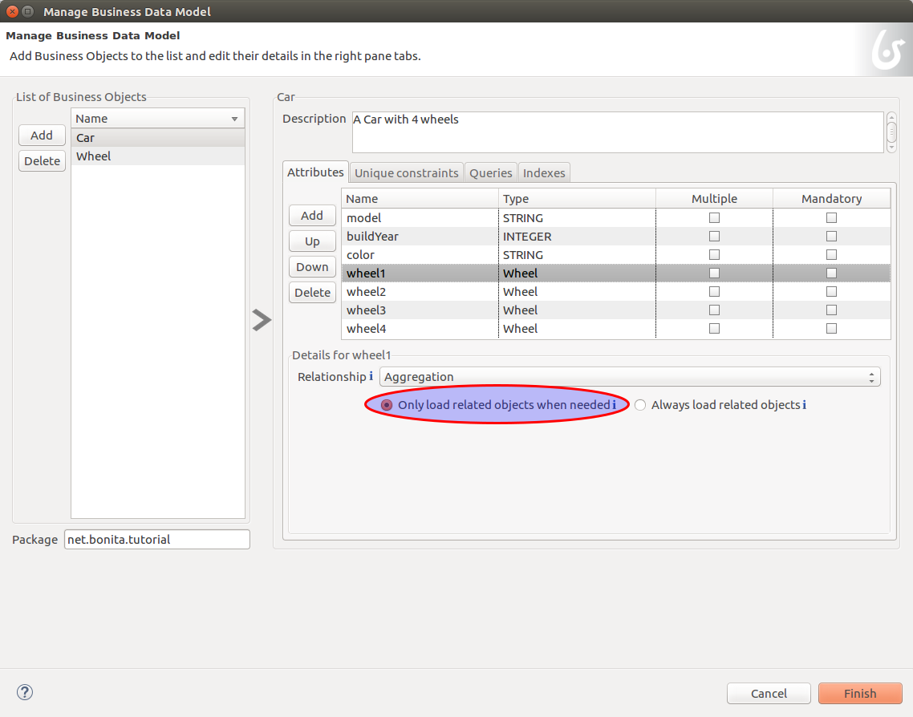

How to manage BDM in REST API extensions
This page demonstrates best practices when developing a REST API Extension accessing Business Data.
Special attention is paid on performance matters.
First use case
Image below shows the BDM model used for the first use-case:

Note that the relationships from car to wheel1, wheel2, wheel3, wheel4 are lazy loaded (in the Studio, it is
configured by selecting the Only load related objects when needed radio button).
Groovy code sample
Below is an example of a REST API extension groovy script that accesses the Business Data model.
Good practices are:
- If lazy loaded objects are not necessary in the response, ONLY extract the information needed. This avoids costly loading of unnecessary objects.
- If lazy loaded objects should always be returned in the response, consider changing the relation from ‘lazy’ to ‘eager’ in the model.
class CarManagement implements RestApiController {
private static final Logger LOGGER = LoggerFactory.getLogger(CarManagement.class)
@Override
RestApiResponse doHandle(HttpServletRequest request, RestApiResponseBuilder responseBuilder, RestAPIContext context) {
// To retrieve query parameters use the request.getParameter(..) method.
// Be careful, parameter values are always returned as String values
// Retrieve p parameter
def p = request.getParameter "p"
if (p == null) {
return buildResponse(responseBuilder, HttpServletResponse.SC_BAD_REQUEST,"""{"error" : "the parameter p is missing"}""")
}
// Retrieve c parameter
def c = request.getParameter "c"
if (c == null) {
return buildResponse(responseBuilder, HttpServletResponse.SC_BAD_REQUEST,"""{"error" : "the parameter c is missing"}""")
}
// use APIClient to retrieve the CarDAO class:
def carDAO = context.apiClient.getDAO(CarDAO.class)
def currentModel = "DeLorean"
// Fetch the cars that match the search criteria:
List<Car> cars = carDAO.findByModel(currentModel, p as int, c as int)
// Prepare the Json result:
// Do NOT return directly the list "cars", as the entire list of Wheel objects would be fetched by lazy loading when calling the JsonBuilder toString method.
// Instead, ONLY select the fields that are necessary for your business logic (alternative methods are also available, see below in this page):
def carModels = [:]
for (Car car : cars) {
// return the fields "id", "buildYear", "color":
carModels.put("id: ${car.persistenceId}", "${car.buildYear} - ${car.color}")
}
def result = [ "model" : currentModel, "number of cars" : cars.size(), "cars" : carModels ]
// Attention: do not use "toPrettyString()" if your response is large, as the page "size" may be uselessly big:
return buildResponse(responseBuilder, HttpServletResponse.SC_OK, new JsonBuilder(result).toString())
}
}
Rest API Response content
Below is an example of the resulting response (the json is formatted to improve readability):
{
"model": "DeLorean",
"number of cars": 30,
"cars": {
"id: 1": "1933 - Red",
"id: 6": "1938 - Rainbow",
"id: 20": "2002 - Green",
"id: 24": "1940 - Yellow",
"id: 33": "1954 - Purple",
"id: 46": "1932 - Rainbow",
"id: 50": "2008 - Teal",
"id: 51": "1979 - Purple",
"id: 53": "1942 - Purple",
"id: 60": "1941 - Rainbow",
"id: 71": "1987 - Orange",
"id: 75": "1956 - Green",
"id: 82": "1938 - Rainbow",
"id: 92": "1955 - Rainbow",
"id: 100": "1965 - Orange",
"id: 119": "1992 - Blue",
"id: 128": "2015 - Purple",
"id: 130": "1932 - Yellow",
"id: 142": "1951 - Grey",
"id: 143": "1930 - White",
"id: 146": "1937 - Teal",
"id: 147": "1961 - Blue",
"id: 152": "1939 - Purple",
"id: 158": "1977 - Grey",
"id: 159": "2013 - Rainbow",
"id: 160": "1997 - Purple",
"id: 163": "1973 - Rainbow",
"id: 164": "1940 - Purple",
"id: 165": "1933 - Teal",
"id: 172": "1983 - Rainbow"
}
}
Note that Wheels are not returned, only necessary information is fetched.
As a result, performance is efficient
Troubleshooting bad practices
:fa-exclamation-triangle: Practices leading to poor performance
Since wheel1, wheel2, wheel3, wheel4 are lazy loaded, they are not retrieved directly when retrieving a Car. The retrieval of related Wheel objects is only performed when accessing the fields (via getWheel1(), …), if necessary.
However, when building the response, the JsonBuilder's toString method implicitly fetches all lazy loaded fields (it calls all the field getters).
So, if a large number of Business Data is returned and if you have lazy loaded fields in the returned objects, numerous queries are executed, leading to poor performance.
For example, if you don’t follow the code sample above and write something like:
def currentModel = "DeLorean"
// Fetch the cars that match the search criteria:
List<Car> cars = carDAO.findByModel(currentModel, p as int, c as int)
def result = [ "cars" : cars ]
return buildResponse(responseBuilder, HttpServletResponse.SC_OK, new JsonBuilder(result).toString())
The returned result will contain, for each car, the fields persistenceId, buildYear and color, allowing you to use these in your application(s).
However, assuming you want to retrieve 10 cars of the “Delorean” model, this code will execute a total of 41 “Select” database queries
- 1 query to get the cars,
- then 4 queries per car to fetch each one of the wheel fields to build the JSON response (so 40 queries).
In comparison, the code following good practises only performs a single Select database query.
Other use cases
The rest api extension example previously described in this page advices to:
- create a custom data structure for the response
- copy only selected fields from the BDM object into this custom data structure
In some cases, you may want to return the entire BDM object structure in the response:
- because it eases parsing the REST API Json result to build an Object
- for maintenance reasons, when adding a new field to a BDM object, you may avoid to have to modify the Rest API extension code to include this new field
Returning the whole object without its lazy loaded fields
The troobleshooting section gives an example using the Groovy JsonBuilder class leading to poor performance: it calls the getter of lazy loaded fields which
then fetches the data.
So using an alternate json builder implementation can solve this issue.
As the BDM object lazy loaded fields are marked with the Jackson’s @JsonIgnore annotation and as the Jackson’s library is available for use in the Rest API Extension,
the best candidate for this is to use the Jackson serializer to generate the json response.
import com.fasterxml.jackson.databind.ObjectMapper
import com.fasterxml.jackson.databind.SerializationFeature
class CarManagement implements RestApiController {
private static final Logger LOGGER = LoggerFactory.getLogger(CarManagement.class)
// Use a shared instance for performance reason (see https://github.com/FasterXML/jackson-docs/wiki/Presentation:-Jackson-Performance)
private static final ObjectMapper jsonBuilder = new ObjectMapper()
static {
// needed to serialize BDM object because of the Bonita lazy loading mechanism
jsonBuilder.disable(SerializationFeature.FAIL_ON_EMPTY_BEANS)
}
@Override
RestApiResponse doHandle(HttpServletRequest request, RestApiResponseBuilder responseBuilder, RestAPIContext context) {
// To retrieve query parameters use the request.getParameter(..) method.
// Be careful, parameter values are always returned as String values
// Retrieve p parameter
def p = request.getParameter "p"
if (p == null) {
return buildResponse(responseBuilder, HttpServletResponse.SC_BAD_REQUEST,"""{"error" : "the parameter p is missing"}""")
}
// Retrieve c parameter
def c = request.getParameter "c"
if (c == null) {
return buildResponse(responseBuilder, HttpServletResponse.SC_BAD_REQUEST,"""{"error" : "the parameter c is missing"}""")
}
// use APIClient to retrieve the CarDAO class:
def carDAO = context.apiClient.getDAO(CarDAO.class)
def currentModel = "DeLorean"
// Fetch the cars that match the search criteria:
List<Car> cars = carDAO.findByModel(currentModel, p as int, c as int)
// Prepare the Json result:
def result = [ "model" : currentModel, "number of cars" : cars.size(), "cars" : cars ]
return buildResponse(responseBuilder, HttpServletResponse.SC_OK, jsonBuilder.writeValueAsString(result))
}
Returning the whole object with an API link load in the lazy fields
The idea is to create a custom Json serializer.
A custom Json serializer is a class which extends com.fasterxml.jackson.databind.JsonSerializer. There is a method serialize to implement, which has the responsability to serialize the input model into Json.
The custom Json serializer has to come with an other class, an object mapper, which extends com.fasterxml.jackson.databind.ObjectMapper.
This mapper registers a simple module (com.fasterxml.jackson.databind.module.SimpleModule), which has to contain the custom serializer.
At the end, in your rest API endpoint, you interact with the mapper.
Here is an implementation example for the object Car which has four lazy attributes of type Wheel:
The serializer takes a Car in input, and build a Json object for it. The wheels are replaced with links to an other Rest API extension with the car ID and the wheel number in parameter. Calling this API will return the wheel. This is a classic lazy behavior.
/***********************
***** SERIALIZER ******
***********************/
import com.fasterxml.jackson.core.JsonGenerator
import com.fasterxml.jackson.databind.JsonSerializer
import com.fasterxml.jackson.databind.SerializerProvider
class CarSerializer extends JsonSerializer<Car>{
@Override
public void serialize(Car car, JsonGenerator jgen, SerializerProvider provider)throws IOException, JsonProcessingException {
jgen.writeStartObject()
jgen.writeNumberField("carID", car.getPersistenceId())
jgen.writeStringField("model", car.getModel())
jgen.writeNumberField("buildYear", car.getBuildYear())
jgen.writeStringField("color", car.getColor())
jgen.writeStringField("wheel1Request", getWheelRequest(car.getPersistenceId(), 1))
jgen.writeStringField("wheel2Request", getWheelRequest(car.getPersistenceId(), 2))
jgen.writeStringField("wheel3Request", getWheelRequest(car.getPersistenceId(), 3))
jgen.writeStringField("wheel4Request", getWheelRequest(car.getPersistenceId(), 4))
jgen.writeEndObject()
}
private String getWheelRequest(Long carID, Integer wheelNum) {
return String.format('../API/extension/wheel?p=0&c=10&carID=%s&wheelNum=%s', carID, wheelNum)
}
}
/***********************
******* MAPPER ********
***********************/
import com.fasterxml.jackson.databind.ObjectMapper
import com.fasterxml.jackson.databind.SerializationFeature
import com.fasterxml.jackson.databind.module.SimpleModule
class CarObjectMapper extends ObjectMapper {
public CarObjectMapper () {
SimpleModule module = new SimpleModule()
module.addSerializer(Car.class, new CarSerializer())
registerModule(module)
}
}
/***********************
******** INDEX ********
***********************/
class CarIndex implements RestApiController {
private static final Logger LOGGER = LoggerFactory.getLogger(CarIndex.class)
private static final CarObjectMapper CAR_MAPPER = new CarObjectMapper()
@Override
RestApiResponse doHandle(HttpServletRequest request, RestApiResponseBuilder responseBuilder, RestAPIContext context) {
def p = request.getParameter "p"
def c = request.getParameter "c"
def carDAO = context.apiClient.getDAO(CarDAO.class)
int startIndex = (p as Integer)*(c as Integer)
int endIndex = c as Integer
List<Car> cars = carDAO.find(startIndex, endIndex)
def result = CAR_MAPPER.writeValueAsString(cars)
return buildResponse(responseBuilder, HttpServletResponse.SC_OK, result)
}
RestApiResponse buildResponse(RestApiResponseBuilder responseBuilder, int httpStatus, Serializable body) {
return responseBuilder.with {
withResponseStatus(httpStatus)
withResponse(body)
build()
}
}
}
Known limitations
Returning the object with SOME of its lazy loaded fields ONLY
This use case is not supported. In other words it is necessary to use one database request per lazy loaded field you wish to retrieve.